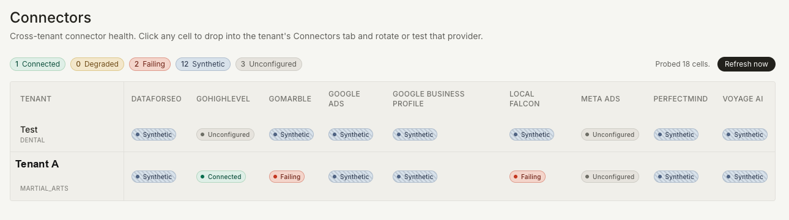

Multi-tenant agent runtime · built and audited · nightly loop idle, September 2026
theSide.io: what an account manager reads instead of six dashboards.
It is built for the person who runs several client accounts at once. Her morning used to start with six tabs and a guess about what had changed overnight. With the loop running, the run has already happened before she sits down. Each thing worth doing arrives as a card with a reason attached and a confidence a critic has already argued down, and she approves or kills it in one queue. The platform makes the vendor calls for the ones she keeps. Two weeks later it comes back and tells her whether the thing she approved moved anything.
What it is
Each client is a tenant. A tenant carries its own connector credentials, its own playbook file, its own memory and its own service tier, and every row in the database is scoped to it.
A run is always the same shape. A specialist agent proposes, a critic argues, a ranker orders, a supervisor routes by service tier and permission, and a person decides. The proposer cannot answer in prose. It has to call a submit_recommendations tool with a typed payload, so nothing in the path from model to card depends on parsing free text.
The ranker has no model in it. It scores expected lift, confidence and novelty against the tenant's own priority weights using arithmetic. The order cards appear in is the thing a client notices when it moves for no reason they can see.
Execution takes an idempotency claim before it calls a vendor, so approving the same card twice does not send the same message twice. Every write appends a signed row to an audit chain, under an advisory lock, so two runs for one tenant cannot fork the history.
Outcomes come back at 7, 14 and 28 days and are written into tenant memory, which the next run retrieves before it proposes anything. That is the only way an agent here learns: through a recorded result, not through a longer prompt.
Nobody signs up for this. The design is that Side Studios installs it, connects the client's accounts and runs it on their behalf. The client sees the work and the outcome. The console is ours.
What an automated audit of the codebase found
The counts are checkable, and the date matters as much as the counts do.
Next.js · Anthropic SDK (tiered models) · Neon Postgres with pgvector · Trigger.dev · Clerk multi-tenancy
My role
I defined the specification. The tenant model, the shape of a card, what a critic is allowed to kill on its own, what a supervisor may route without asking a human, and what an action has to record before it counts as done. I set the acceptance criteria per surface, and the rule that a connector cannot write anything until its health and its credentials resolve to a real account.
I directed the build. Coding agents wrote the bulk of the code against those criteria, in reviewed increments, and I do not hand-write most of the application code. I reviewed the diffs, ran the suites and rejected what missed the spec. The codebase is around 77,000 lines. I would not offer that as evidence of anything except that a lot of it exists. What I will defend is the shape: why the ranker has no model in it, why the executor claims an idempotency key before it calls out, why the audit chain is signed and locked.
What I did not do. The attribution windows are my design decision and they have not been validated against a holdout, so what the platform reports at 14 days is a correlation with a timestamp on it. Read it as a signal and nothing stronger.
Proof
Two screens and the architecture document. Tenant names are redacted.


Architecture atlas: layers, runtime loop, connector registry, status list
Honest state
What is running, what is half-built, and what was deliberately left alone.
- Status, September 2026: the nightly loop proposed recommendations for a first tenant in May 2026. It has not executed actions in production, and it is idle until the worker runtime it was pinned to is replaced. The Sep 10 audit wrote the blocker register (tenant row-level security not yet enabled; worker migration) and the target architecture for re-activation.
- Implemented and tested: tenant creation and operator invites, the proposer, critic, ranker and approval queue, the audit lifecycle with hooks and memory injection, connector credentials with health and provenance, the signed audit chain, idempotency claims, the tool registry and the permission rules.
- Wired but not finished: attribution scoring and the quality memory that reads it, the pixel desired-state model, budget pace alerts, and the draft generators for quarterly reviews, health reports, creative and SEO.
- Deferred on purpose: live CMS and pixel writes to Shopify, Webflow, WordPress and GitHub. The Grain pull and the transcription path behind it. GoHighLevel agency provisioning and social planner writes. The subprocess executor. Each of those is a write into somebody else's system, and each is waiting on credentials or on the client's own authorization rather than on code.
- Today's connector reality: the matrix above is what the platform reports right now. Most cells run against fixtures rather than a live account. Standing them up per tenant is the work in front of me.
- The static audit is from June 2026. The September 2026 audit reran the 21 test groups and added 63 regression tests. I can send the raw output of either run.
The Atlas traces one action the whole way through with illustrative values: what the proposer sees, what the critic does to it, where the ranker puts it, who approves it, what the executor claims and calls, and what the 14-day outcome row would hold. No production execution or measured outcome exists yet. When the loop is re-activated, that trace against a real tenant is the first thing I would show.